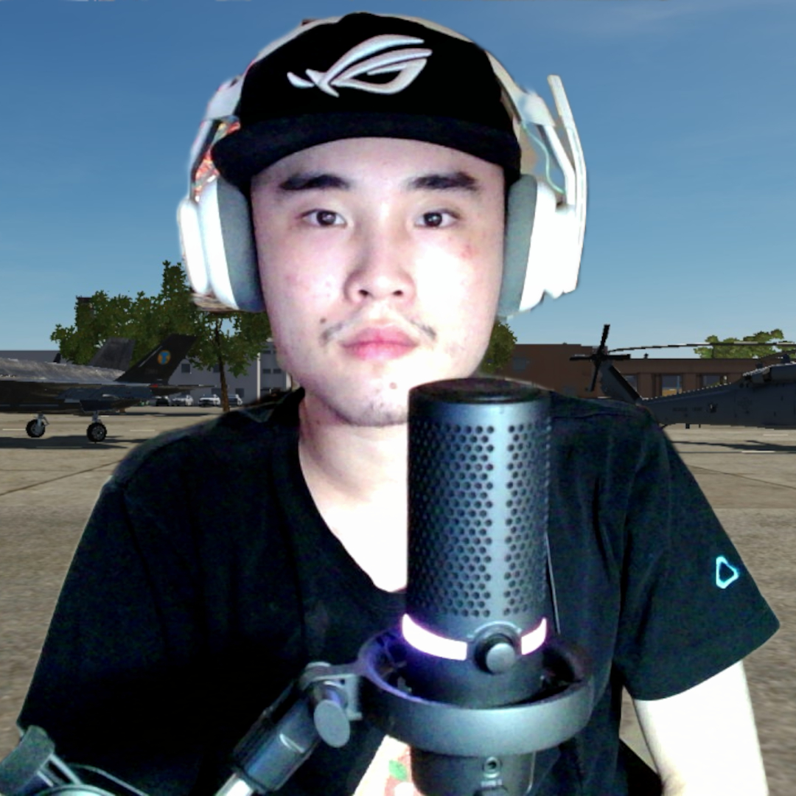

On June, 16th, 2024, Terengineer's rules has been official launched!
About
Hello, my name is Terengineer, The Gaming, Earthquake Monitoring Record, and Live Streamer, I'm created my YouTube channel about 8 year's ago, I'm edit some Gameplay, sometime I created meme in gameplay video, sometime I created my track music, is eletric, because I can hear the bass sound, sometime created shorts, that's everyone like watch short videos, my last mission required is get 4000 public watch hours can get monetization, unfortunately in 2018, I started wheel chair with got fever sick, I can't walk now, so that's how I never give up, so hope you enjoy!